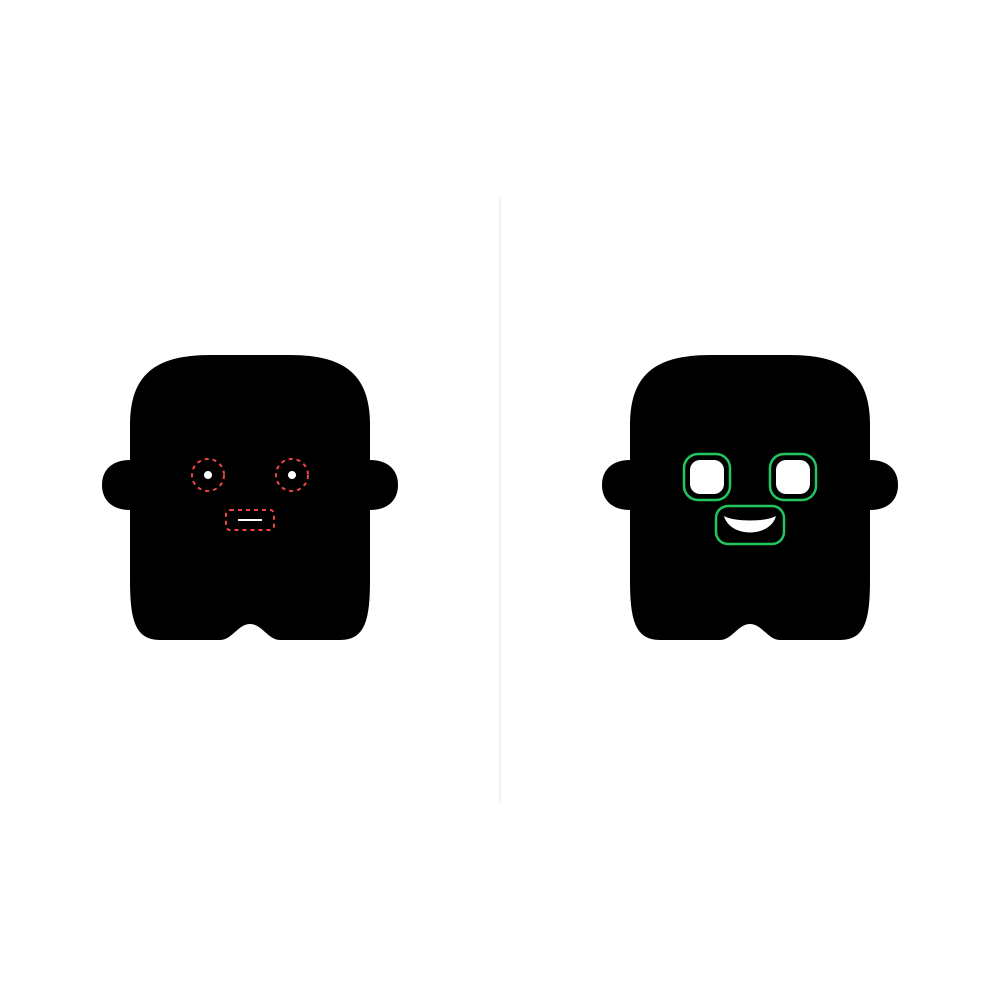

I.E.P. Mater Admirabilis
Chorrillos • Inicial y Primaria
Diseña tus propios personajes en relieve, fabrícalos con impresión 3D en tiempo real, crea una colección con identidad propia y transfórmala en un producto listo para el mercado.

Cada estudiante modela, imprime en 3D, pinta y empaqueta su propia colección de personajes para exponerla en el Demo Day Final.
Un programa práctico y gamificado: cada 2 sesiones los chicos conquistan una estación formativa hasta culminar su colección lista para el mercado.
La forma y personalidad de tu personaje en papel
Boceto Maker a escala real, definición de proporciones, silueta exterior y la historia/universo de su personaje.
Sus contornos y curvas digitales en la pantalla
Digitalización del dibujo, vectorización de contornos, control de nodos y aplicación de criterios Makerdu (trazo cerrado y base estable).
El grosor y relieve para darle cuerpo sólido 3D
Modelado en Tinkercad: extrusiones, relieves por capas, tolerancias de encaje y diseño de base de soporte para exhibición.
Tu creación física capa por capa en 3D
Laminado en Slicer (alturas de capa, relleno, soportes) y fabricación en impresoras 3D con filamento PLA ecológico.
Cada personaje con tus colores y pinturas favoritas
Post-procesado Maker: retiro seguro de soportes, pulido y aplicación de técnicas de pintura acrílica y sellado de autor.
Lanzando tu primera colección de juguetes
Diseño de empaque (caja o blíster), tarjeta coleccionable y gran Demo Day / Feria Maker frente a los padres de familia.
Los alumnos tienen acceso en casa a videos y guías paso a paso para seguir creando. Los padres pueden ver el avance real de cada misión de su hijo.
 Base Estable
Base Estable
 Trazo Cerrado
Trazo Cerrado

Huecos AmpliosEl colegio aprovecha sus aulas disponibles; nosotros resolvemos el 100% de la operación tecnológica.
Elige el modelo que más te convenga: Paquete Llave en Mano (mayor ganancia para el colegio) o Comisión Compartida (cero riesgo).
100% seguro. Usamos filamento PLA, un polímero biodegradable hecho a base de almidón de maíz o caña de azúcar, no tóxico y libre de vapores nocivos. La manipulación de la boquilla caliente se realiza bajo estricta supervisión de los mentores.
No. Todo el modelado 3D se realiza en Tinkercad directamente desde el navegador Google Chrome. No requiere instalar licencias ni software de pago.
No. Si el colegio cuenta con un laboratorio seguro, la máquina se instala allí durante las 6 semanas. De lo contrario, se lleva en la clase inaugural (efecto WOW), en las sesiones de laminado/impresión y en el Demo Day final, fabricando las piezas de mayor tiempo en el laboratorio central de tinkiLab.
Podemos visitar la sala de cómputo del colegio, definir los días ideales (ej. Martes y Jueves) y entregarte el diseño de flyer listo para compartir con los padres.